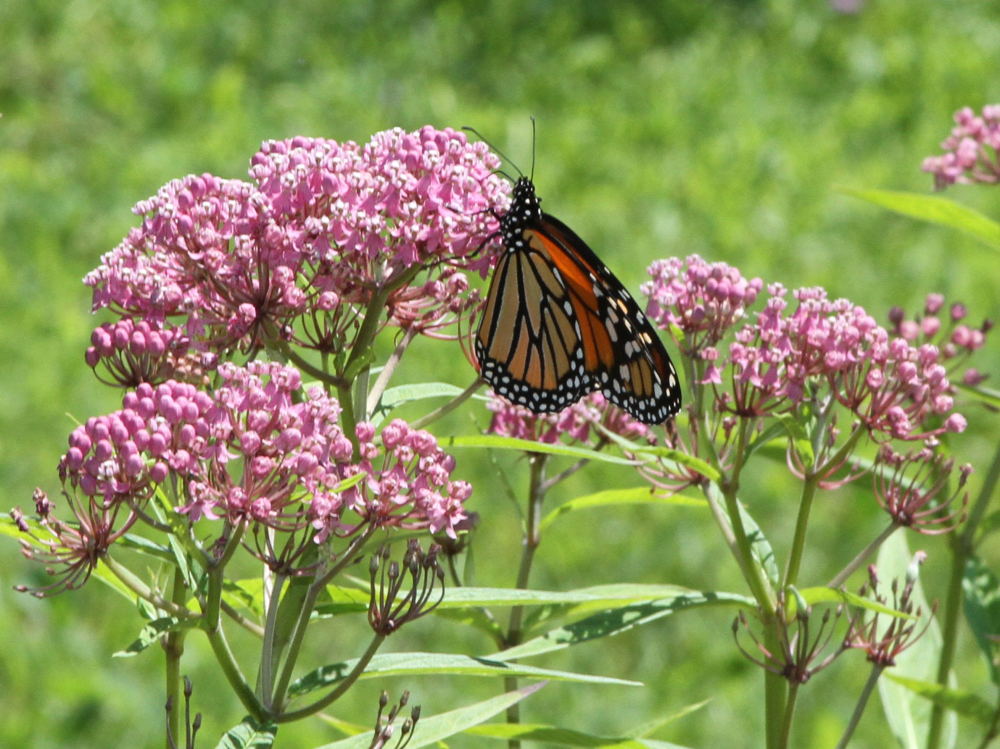
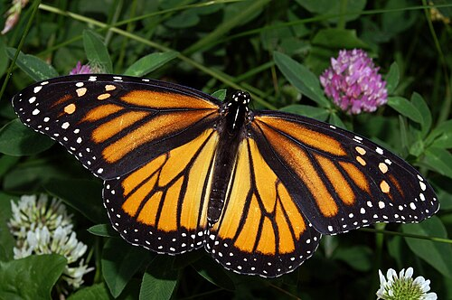
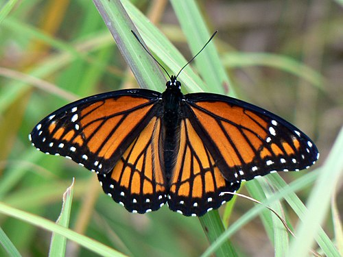
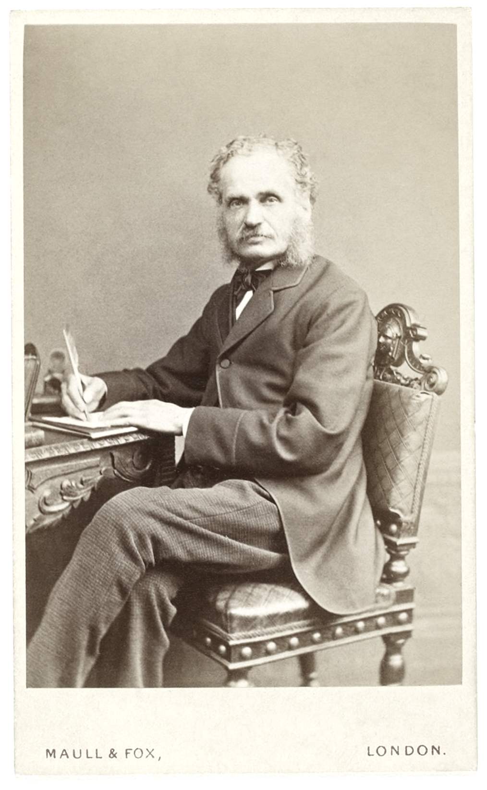
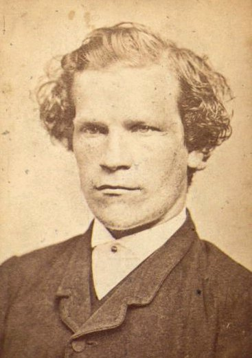

LZ
Table of Contents
Milkweed

Milkweed is a perennial plant abundant in Africa and the Americas. The genus is named Asclepias after the Greek god of healing Asclepius who is often depicted with a snake that, according to Greek mythology, slid up his staff and taught him secret knowledge. The symbol of a snake wound around a staff is to this day a familiar symbol associated with medicine.
Cardiac Glycosides
Milkweeds produce a latex containing cardiac glycosides, a bitter-tasting toxin, as protection against herbivores. These compounds are more concentrated in the parts of the plants that animals would eat (leaves, stems, seeds).
Cardiac glycosides cause a chain reaction that affects the heart: They inhibit sodium-potassium pumps in cells, disrupting the potassium ion gradient across cell membranes. This in turn causes a higher concentration of intracellular calcium due to less efficient sodium-calcium exchangers. The higher calcium levels cause the heart to pump more forcefully due to increased interaction between actin and the myosin filaments that generate contractile force (positive inotropic effect). It also causes a slower heart rate due to its effect on the electrical conduction system (negative chronotropic effect).
Preexisting steroid synthesis pathways that serve other functions like hormone production may have provided a starting point for it to emerge from gradual mutation. Any genetic mutations that reduce the plant's palatability to herbivores would be advantageous. The production of cardiac glycosides developed independently in other plants such as foxgloves; an example of convergent evolution.
The Monarch Butterfly

Not all animals are deterred from eating milkweed. The caterpillar of the milkweed butterfly, more commonly known as the monarch butterfly, has evolved specific amino acid substitutions on their cells' sodium-potassium pumps, reducing the effectiveness of inhibition by cardiac glycosides. They are not just able to ingest it, they selectively absorb the poison into their hemolymph (insect blood) and concentrate it in various tissues. This persists through metamorphosis into the adult stage, making the butterfly unappetising to its would-be predators.
The distinctively coloured monarch butterfly, named after King William III aka William of Orange, migrates great distances across North and Central America for good food and weather conditions. As a result, it is exposed to many ecosystems with distinctive predators. This exposure to diverse environments and predators may explain why monarch butterflies were particularly well-suited to develop distinctive colouration and a poisonous, bad tasting poison. The identifiable colours are a form of aposematism - signalling of danger to predators.
The Viceroy Butterfly

The viceroy looks somewhat similar to the monarch but it does not have the adaptation to eat milkweed. However, since predators perceive it as signalling danger, it appears to get the same benefit as the monarch without the additional expenditure of energy. In the past this was thought to be an example of Batesian mimicry.
Batesian Mimicry

In 1848 two English amateur entomologists, Henry Walter Bates and Alfred Russel Wallace, inspired by books including Darwin's The Voyage of the Beagle (1839), set off to Brazil to explore the Amazon rainforest. Bates remained for over a decade and made a detailed study of butterfly species in the region. He noticed that some butterflies had superficial similarities in appearance but, upon closer inspection, were clearly not closely related. He observed that some distinctively colored butterflies seemed unafraid of predators. He reasoned that these species were either unpalatable themselves, or had evolved to resemble toxic species and thus gained protection without producing their own toxins.
Müllerian Mimicry

As mentioned above, the viceroy butterfly cannot eat milkweed. However it does eat willow and other plants that contain salicylic acid and other bitter, bad tasting compounds. While not as toxic, this is also a deterrent to herbivores. Since it has its own deterrent, the viceroy is not a strict example of Batesian mimic.
Fritz Müller, a German biologist, studied butterflies in South America in the 1850s and also noticed the superficial similarity of not-so-closely related butterflies. As an early proponent of Darwin's theory, Müller suggested an evolutionary reason for this whereby different species that were somehow protected against predators might evolve a similar appearance so as to share the costs of predator education.
Since the viceroy possesses its own chemical deterrent, its resemblance to the monarch can be more accurately described as Müllerian rather than Batesian mimicry.